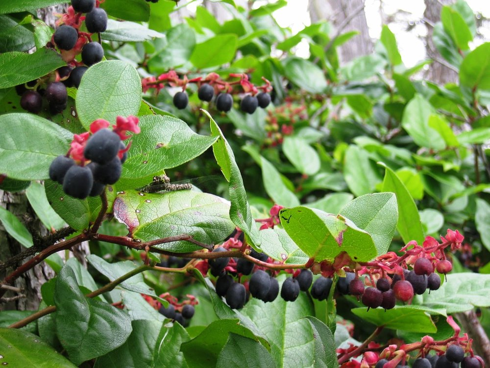
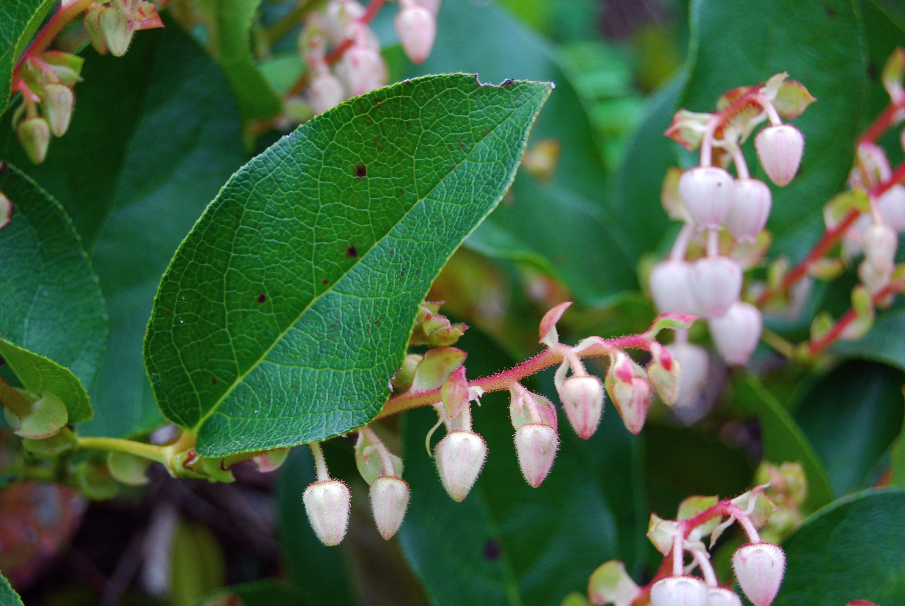

Salal (Gaultheria shallon)
Fruit: t’áḵa7, Bush: t’áḵa7áy̓


Planting
Salal is a coastal shrub native to North Vancouver, BC. Here's how to plant and care for salal:
- Choose a well-drained location with partial shade.
- Prepare the soil by removing any weeds and adding organic matter.
- Dig a hole slightly larger than the root ball and place the plant in the hole.
- Backfill the hole with soil and gently firm it around the plant.
- Water the plant thoroughly and keep the soil moist but not waterlogged.
Usage
Salal has been traditionally used by Indigenous peoples for various purposes:
- The berries are edible and can be used in jams, jellies, and desserts.
- The leaves have medicinal properties and can be used in herbal remedies.
- The branches and leaves are commonly used in floral arrangements and wreaths.
Environmental Impact
Salal plays an important role in the local ecosystem:
- It provides food and habitat for wildlife, including birds and small mammals.
- The dense growth of salal helps prevent erosion on hillsides and along riverbanks.
- Its deep roots help improve soil stability and water retention.